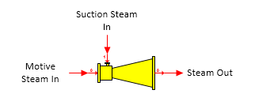

Thermocompressor A thermocompressor station is used to recompress a low pressure suction steam using a higher pressure motive steam.

General Features The suction steam pressure is boosted using motive steam. The amount of suction steam entrained by the motive steam is dependent on the efficiency, entrainment ratio, or temperature and pressure out entered for the performance of the thermocompressor. Pressure feedback can be used to define the pressure out. Water/vapor phase changes can occur in a thermocompressor station.